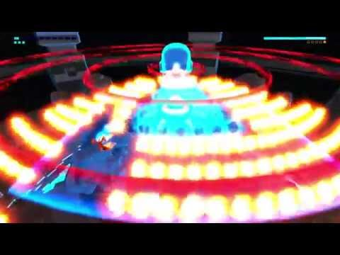

So, if you are reading this without playing the game then I will quickly recap what just happened before this. After escaping the prison you have now entered the free world.
Now remember how all the bosses have been saying how you will destroy the world if you escape the prison, well, they were all completely right. Aparently, your mere prescence kills all life around you. Seriously, all plants within five feet of you die and all water dries up. After talking to The Voice in the free world you discover your old armor and fly to a space ship.
You then asked by the mothership A.K.A The Star if you will the world is fit for assimilation. If you agree the world is destroyed and you die. If you say no you will fight The Star in defence of the free world.
Now in this fight you lose slightly slower while shooting and loose your ability perform melee attacks. In return you shoot faster and your charged shot is replaced with a laser. During the first phase of the fight you will need to destroy the hands guarding the head while dodging the attacks fired by the droids. The ones in the back fire regular bullets while the ones in the fornt will fire lasers, pink bullets and will perform easily blocked melee attacks.
The next phase is the same except that the robots switch thier attacking roles. In the next phase the boss will start using his hands to attack you.
Once you destroy one of the hands all the bots and the remaining hands will fire lasers that rotate on a small axis, leaving the middle as a small safe place. The last phase is the great mother of all bullets hells. It is difficult and increadibly hard, it requires complete mastery of movement to complete. The boss will drop his hands and start friring shockwaves and unblockable orbs.
He will the fire a massive laser form his mouth and flood the screen with bullets.

He wil then flood with the screen with so many bullets that the only advice I can give is destroy regular bullets and dodge shockwaves and orbs. If you can survive this onslaught the fight will end you have beaten every boss in the game.
After the fight, the mothership will explode and you will die in the vacumn of space. The final scene before the credits is the The Voice and his daughter looking out on the the world that you saved.